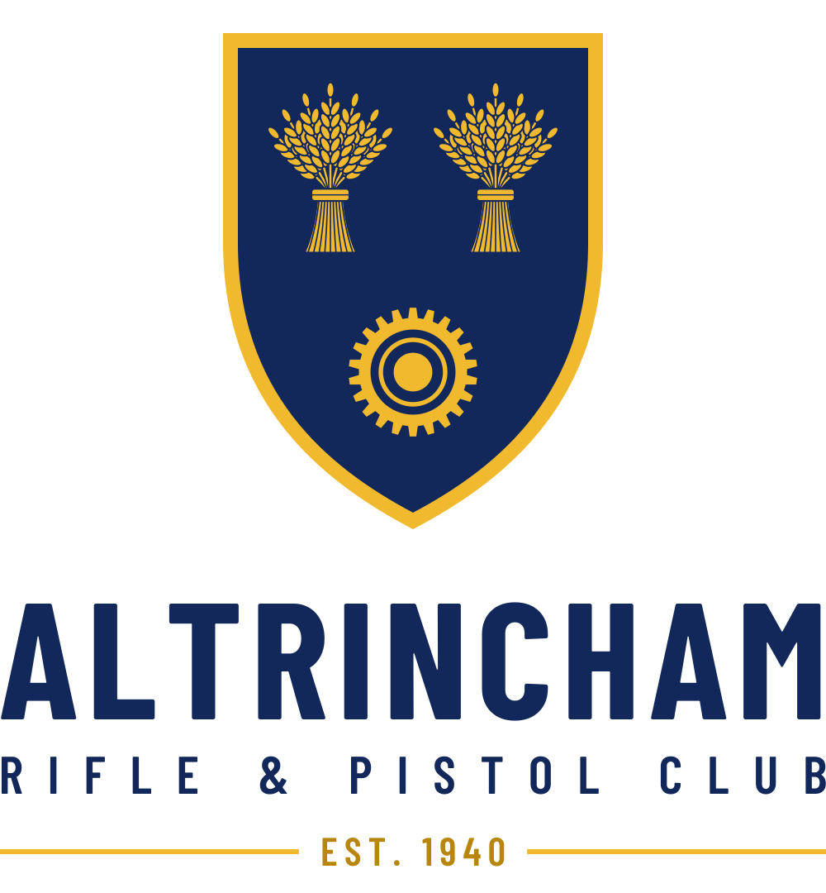
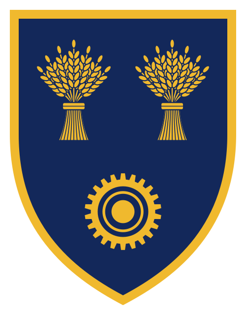
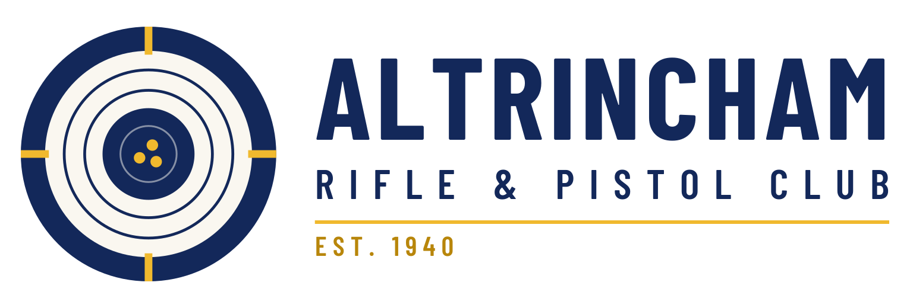
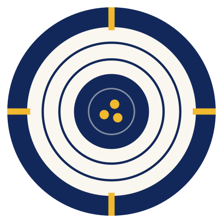

Concept 1 · Closest to today
Classic crest
The badge the club already has, redrawn cleanly. It keeps the roundel, the blue shield, the two wheatsheaves and the cog wheel. The colours are richer, the lettering is crisp, and "Est. 1940" sits at the bottom between two stars.
Best for badges, patches, trophies and anywhere it appears large.

Concept 2 · In between
Modern crest
The same shield and charges, drawn flat and simple, without the ring of text. The cog's centre becomes target rings, linking the heritage symbols to what the club actually does. The name sits underneath in bold modern lettering.
The shield on its own (shown below at small sizes) works as an icon, and the full version works on letterheads and the website.

Header
Concept 3 · Completely new
Target mark
A fresh start built around precision: a target seen through an aperture sight, with a tight three-shot group in the bull. There's no heraldry. It's clean and modern and stays easy to recognise at tiny sizes.
Works well on kit, social media and the website, but it leaves the traditional badge behind.

HeaderFor comparison
Current logo
The version on the club website today.